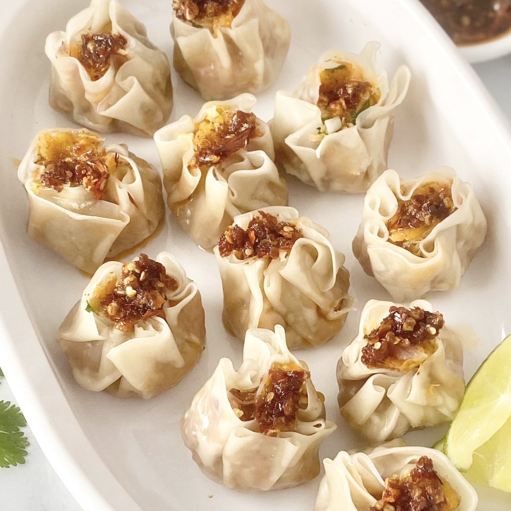

#10
Siomai

Siomai is a type of traditional Chinese dumpling made of ground pork.
Ingredients
- 1 kg ground pork with fat
- ⅓ cup turnips
- ⅓ cup carrots
- 2 medium onions
- bunch of spring onions
- 1 egg
- 5 tablespoons sesame oil
- 1 teaspoon ground black pepper
- 1 teaspoon salt
- 50 pcs siomai wrapper
- soy sauce, calamansi, sesame oil
Instructions
- Combine all the ingredients except the water and siomai wrapper and mix thoroughly.
- Wrap the mixed ingredients with the siomai wrapper.
- Use a steamer and steam the wrapped siomai for 15 to 25 minutes. The time depends on the size of each siomai.
- Serve hot with soy sauce and calamansi.